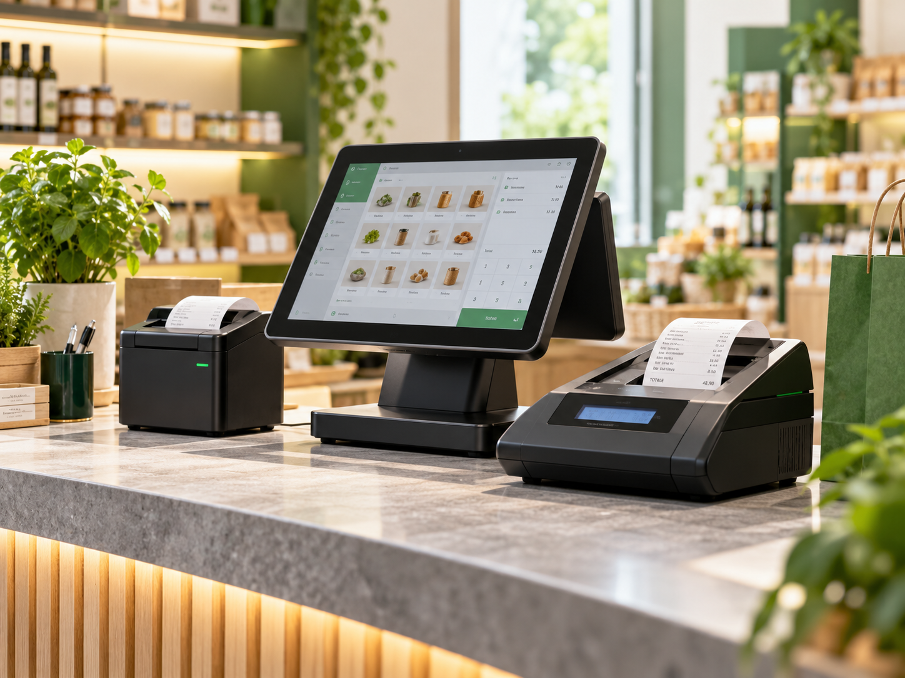

Olivetti
Form 100
Registratore telematico compattoBatteria ricaricabile, doppio display, tastiera resistente all’acqua; adatto anche al commercio ambulante.
Soluzioni per le esigenze delle attività commerciali.
Registratori telematici e dispositivi per le attività commerciali, con consulenza sulle apparecchiature disponibili e supporto tecnico.
Consulta una selezione di modelli documentati dai produttori e richiedi informazioni per vendita, fornitura o noleggio.

Batteria ricaricabile, doppio display, tastiera resistente all’acqua; adatto anche al commercio ambulante.
Sistema di cassa con cover personalizzabili; modello storico, disponibilità e supporto da verificare.
Fotografie illustrative delle categorie e non dei singoli modelli. Prodotti e caratteristiche desunti dai riferimenti ufficiali; la disponibilità commerciale, i prezzi e le configurazioni sono soggetti a conferma. La gamma retail Olivetti è stata oggetto di trasferimento a Buffetti: chiedere conferma per i registratori.
Contattaci per approfondire disponibilità, soluzioni e modalità di fornitura o assistenza.
Vai ai contatti →